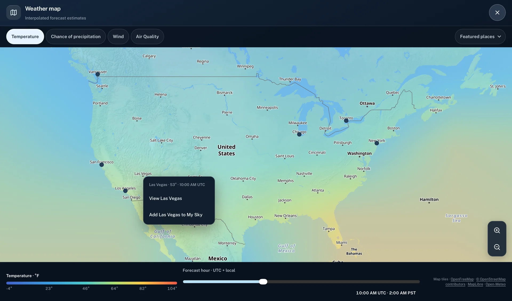
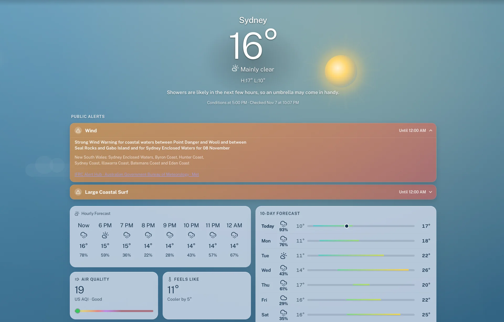
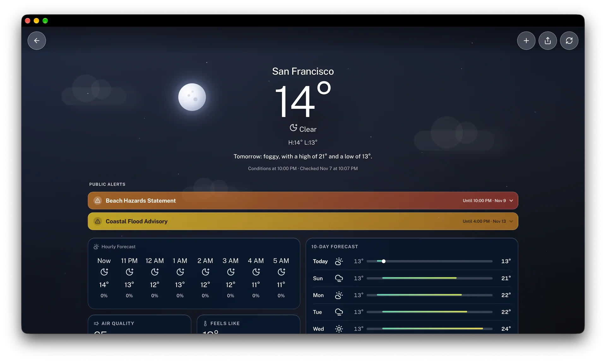

Why I built duskline
I wanted to check the weather in Tokyo as easily as I check it at home, on my phone or my computer.
ProjectsLearningOn this page
I wanted to be able to open the same weather app on whatever screen I had nearby. On my phone I might only want to know if I should take a jacket. At a desk I might spend longer looking through the hourly chart. Both should feel like a full version of the app. That’s why I built duskline for the web.
A forecast beyond my own city
I wanted to look up the weather far from home, too. Open-Meteo gives duskline broad forecast coverage. It serves forecasts by coordinates and draws on regional models where available, with global models covering other areas. I can look up Tokyo or Cape Town from the same screen I use for the Bay Area.
Put those forecasts side by side and a plain word like “Today” starts to get tricky. At four in the afternoon in the Bay Area, it’s already tomorrow in Tokyo. The app has to know which day each city is on before it can draw a useful hourly chart.
Which time zone is it?
A weather provider can send an hourly forecast labeled 18:00 in the city’s local time. The clock reading is easy to display. The tricky bit comes when the app needs to put it on a timeline. If the browser treats a timestamp with no offset as the device’s local time, Tokyo’s six in the evening lands at six in the evening in California.
In duskline, the city’s time zone comes along with the forecast. I use it to interpret those clock readings and to decide which day is “today.” I can then put the current time and the forecast hours on the same chart, while keeping the labels in the time the city actually uses.

How duskline draws the sky
The sky in a city’s detail view comes from a similar idea. A clear night and a clear afternoon might both read “Clear,” but they don’t feel anything alike. The city’s local light and conditions shape the colors. Clouds and rain can give the view a different character before I read the forecast.
There’s a limit to how much I want that background to do. If I’m trying to decide when to go out, I need to see when the chance of rain picks up. I kept that in the hourly chart, where I can move across the day and read the values. The sky gives me a first impression, and the chart lets me check it.


When there’s an official alert
San Francisco’s screenshot shows a clear night and a coastal flood advisory on the same screen. Both can be true. The forecast describes the sky and the next few hours, while the advisory is about a hazard along the coast. That’s why I put public alerts above the hourly forecast. You can open an alert to see details like the areas it covers, when it ends, and who issued it.
For eligible U.S. locations, duskline fetches active alerts from the National Weather Service. Where an official feed is available internationally, it uses the IFRC Alert Hub. The Sydney screenshot shows an example from Australia’s Bureau of Meteorology, which issued a strong wind warning for specific coastal waters.
Checking the forecast offline
I wanted duskline to be as easy to reach as any other weather app. I made it an installable web app (a PWA), so it can sit on my phone’s Home Screen and open in its own window on a computer. The same forecast I can glance at on my phone is there when I want to sit down and look more closely.
Say I check the weather before heading out, then lose my signal on the way. I can reopen duskline and read the recent forecast it saved on that device, along with the time it was last checked. If I checked it an hour ago, I can still look up when the rain was expected. If I checked it yesterday, I know to refresh when I get a signal. Fresh forecasts and public alerts need a connection.
Look at two skies
Open duskline, find your city and one several time zones away, and check the local time in each. Then look at the hourly forecast in both. What does the next hour look like there? That’s my favorite question to ask of Horizon, especially when it’s getting dark outside my own window.